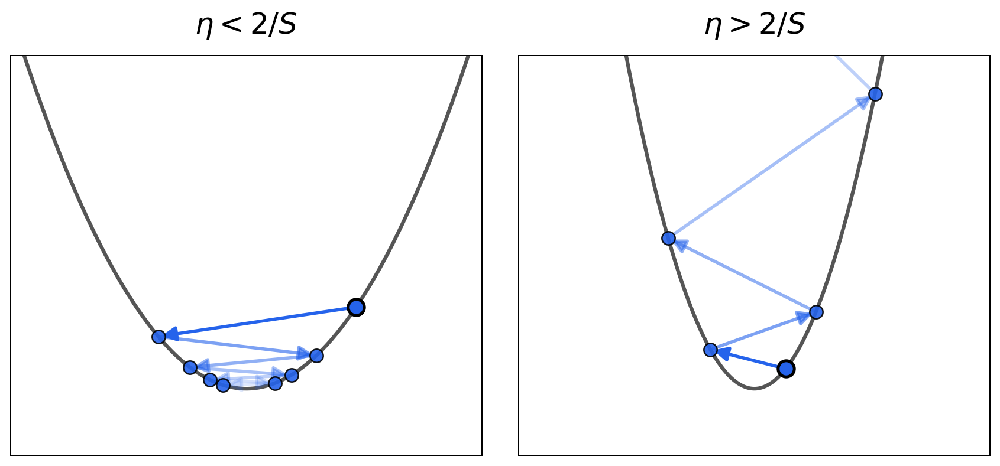
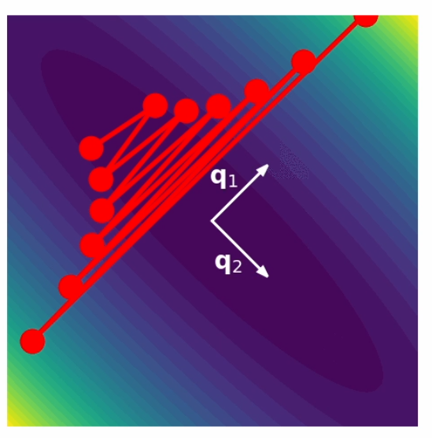
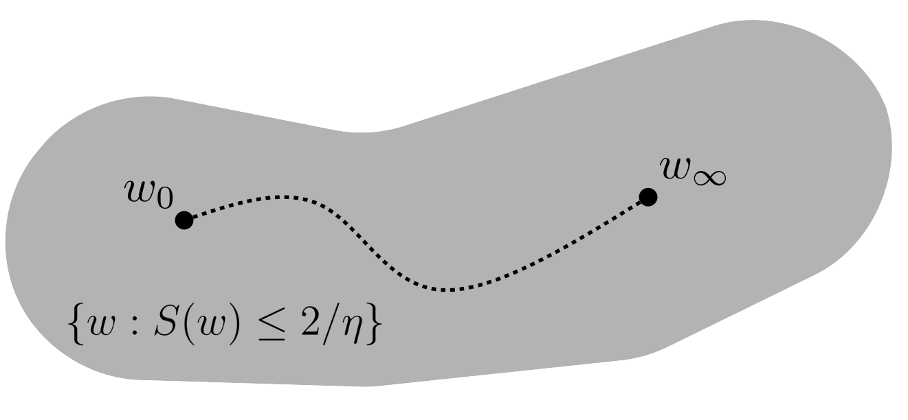
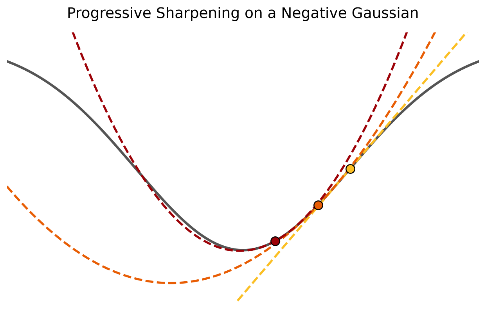
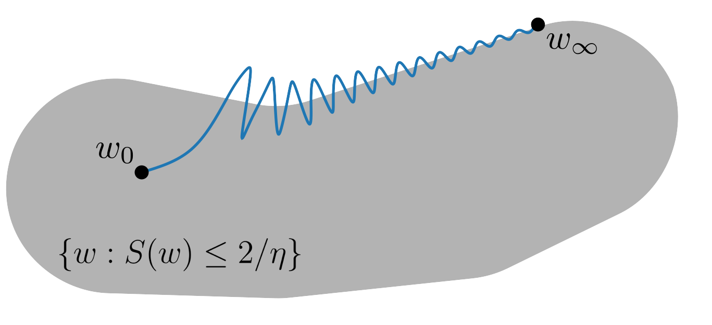

The dynamics of optimization in deep learning typically operate in a complex regime termed the edge of stability, which cannot be described by traditional analyses of optimization. In this tutorial, we'll explore this phenomenon.
Note: In this tutorial, you will train neural networks directly. Although the phenomena we discuss is general and holds for more complex models encountered in practice, our in-tutorial examples are done with a simple task to ensure fast run-times. You'll be able to play around with the parameters and more complex tasks for yourself at the end!
First, we discuss traditional analyses of gradient descent. Under gradient descent, a model's initial parameters $w_0$ are updated according to
$$w_{i+1} = w_i - \eta \nabla L(w_i)$$where $\eta$ is a step size (called the learning rate) and $L(w_i)$ the loss of our model with parameters $w_i$. In the limit $\eta \rightarrow 0$, this becomes a continuous differential equation called gradient flow, which is easier to analyze. (maybe some mentions of successes here?)
This leads to the following question: How do nonzero learning rates affect our optimization dynamics?
As an example, consider a 1D quadratic loss
$$L(w_i) = \frac{1}{2}Sw_i^2$$The update rule is
$$w_{i+1} = w_i - \eta S w_i \quad\longrightarrow\quad w_{n} = (1 - \eta S)^n w_0$$which converges to the minima $w_i = 0$ only if
$$|1 - \eta S| < 1 \implies \eta < \frac{2}{S}$$
In higher dimensions, the quadratic loss is
$$L(w) = \frac{1}{2}w^\top A w$$where $A = \nabla^2 L$ is the Hessian, a $p \times p$ matrix where $p$ is the number of parameters. Since the gradient of this quadratic is $\nabla L(w) = Aw$, the update rule becomes
$$\mathbf{x}_{i+1} = (I - \eta A)\mathbf{x}_i$$Since $A$ is symmetric, we can decompose the parameter vector along its eigenvectors. Writing $w_i^k$ for the component along the $k$-th eigenvector (with eigenvalue $\lambda_k$), each component evolves independently:
$$w_{i+1}^{k} = (1 - \eta \lambda_{k})w_{i}^{k}$$This converges only when $|1 - \eta \lambda_k| < 1$, which must hold for every eigenvalue. The binding constraint comes from the largest:
$$\eta < \frac{2}{\lambda_{\max}(A)}$$We call $\lambda_{\max}(A)$ the sharpness. If sharpness exceeds the critical threshold $2/\eta$, gradient descent diverges along the sharpest direction.

Real deep learning objectives are not quadratics, but we can always take a quadratic Taylor approximation around our current weights. It's reasonable to assume gradient descent on this quadratic approximation would resemble the short-term dynamics on the real objective. In that case, if the sharpness of our quadratic approximation is too large, then gradient descent will oscillate and blow up along the top Hessian eigenvectors. This suggests gradient descent cannot function properly in regions of weight space where $S(w) > 2/ \eta$.
Note: This approximation is only guaranteed to be good when the step size is small and the higher order Taylor terms are small. So it's not actually clear why this should be a good proxy, and indeed, it's not a good proxy for ReLU, where there are probably many higher order Taylor terms.
In that case, why does gradient descent work in deep learning? One explanation is that gradient descent stays in 'stable regions' of weight space where $S(w) < 2 /\eta$. This is illustrated in the following cartoon.

This is the picture often analyzed in traditional optimization theory ("local $L$-smoothness").
In many real learning objectives, we find an interesting empirical trend called progressive sharpening, where sharpness tends to increase throughout training.
Experiments: As an example, we train an MLP with a single hidden layer to a Chebyshev Polynomial (dataset depicted on the left). Observe that the initial sharpness slowly begins to increase throughout training.
It occurs in a large variety of objectives, but why it appears so universally is an open theoretical question.
An example of a 1D loss function that would progressively sharpen is a negative Gaussian:

It is not clear this picture provides useful intuition for the general case with multiple dimensions, although you can plot slices of the loss landscape like this.
Although progressive sharpening can stop before the critical threshold (particularly with very small learning rates), what generally happens is different.
As the quadratic approximation predicts, training is unstable beyond the critical threshold. This is apparent in the form of sudden spikes in the loss. However, the sharpness does not keep increasing but instead oscillates around this threshold. Meanwhile the training loss behaves non-monotonically over the short-term, while decreasing consistently over the long term.
Contrary to our quadratic approximation, we find networks somehow self-stabilize at the critical sharpness threshold and are able to optimize at this boundary. We call these dynamics training at the edge of stability (EOS).

It turns out this self-stabilizing phenomenon can be explained by looking at a third-order expansion of our training loss (beyond the second-order quadratic). There, we find that oscillations along the top Hessian eigenvector automatically trigger reduction of the top Hessian eigenvalue. Thus the sharpness naturally decreases, forcing the network back into the region of stability.
These effects are also not limited to only the largest eigenvalue. Instead, multiple eigenvalues can reach the edge of stability, giving rise to much more chaotic training. This also shows quite clearly that the critical threshold predicted by our quadratic approximation has significant impacts on the training of neural networks.
Earlier, we mentioned that gradient descent can be studied in the limit of infinitesimal learning rates as a continuous differential equation called gradient flow.
$$\frac{d w(t)}{dt} = - \nabla L(w(t))$$This formulation simplifies the analysis of many systems. It turns out this simplification breaks down largely at the edge of stability — up until hitting that threshold, different networks trained with different learning rates behave relatively similarly in their training loss and sharpness, and diverge only there.
One idea for describing the training dynamics of neural networks beyond this threshold is called central flow, based off analysis of the self-stabilizing phenomenon via the third-order Taylor expansion. We won't go into the details here.
Although the existence of the edge of stability, and why the sharpness goes down at the edge can be explained through arguments based on the second and third order Taylor expansions of loss function, there is a lot that is unknown about this phenomenon. Here, we give an empirical list of observations of how behaviour changes as different hyperparameters change.
Note: The idea for this section is that each item has, related to it, two buttons for some configurations that will be set in the playground at the bottom that will run experiments to support the idea.
Activation function — linked to the second order Taylor expansion.
Datasets
Network width — Maybe we can discuss the NTK limit, but I actually don't know enough about it.
Network depth
You can play around with all of these yourself below.